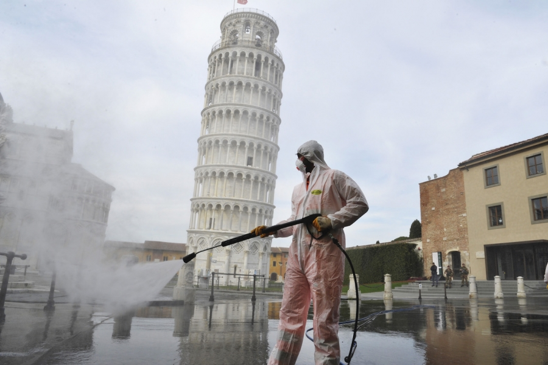

-
Gazeta Sporturilor Ion Țiriac, nemulțumit de cadoul Simonei Halep: „Nu e mai mult de 100 de dolari. O aștept la colț!” Ion Țiriac (80 de ani), președintele Federației Române de Tenis, a dezvăluit ce cadou a primit din partea Simonei Halep (28 de ani, 2 WTA), după ce sportiva noastră a pierdut un pariu cu omul de afaceri.
-
Republica „Adevărul despre coronavirus” vine pe WhatsApp și mulți dintre bătrânii noștri se infectează cu el Îmi trimite mătușa mea recent pe WhatsApp un text primit din altă parte în care nu știu ce medic renumit anunță că toată povestea asta cu pandemia e o mascaradă, că Statele Unite au plănuit asta de acum câteva luni, că au împrăștiat un gaz în aer care afecteaza plămânii și că pandemia se va termina în aprilie.
-
 Republica Vlăguită de coronavirus, Italia riscă o boală mai gravă. Şi, odată cu ea, se va infecta întreaga Europă Scrisesem zilele trecute de lipsa de empatie şi acţiune a instituţiilor europene în faţa pandemiei care pusese la pământ sistemul sanitar performant al Lombardiei, dar şi moralul italienilor, fără deosebire de regiunea în care locuiau.
-
 Gazeta Sporturilor
Japonia uimește lumea! Ce secret poate avea în lupta cu coronavirusul? Takayuki: „Aşa am fost educaţi”
Site-ul worldometers.info oferă în timp real cifrele pe care fiecare ţară le raportează oficial referitor la pandemia cu coronavirus: persoane infectate, decedaţi, recuperaţi, cei aflaţi în stare gravă.
Gazeta Sporturilor
Japonia uimește lumea! Ce secret poate avea în lupta cu coronavirusul? Takayuki: „Aşa am fost educaţi”
Site-ul worldometers.info oferă în timp real cifrele pe care fiecare ţară le raportează oficial referitor la pandemia cu coronavirus: persoane infectate, decedaţi, recuperaţi, cei aflaţi în stare gravă.
-
 www.digi24.ro
Cât va dura criza coronavirusului? E posibilă o reinfectare? Ce spune un specialist epidemiolog din Timișoara
Încălzirea vremii ar putea tempera evoluția coronavirusului, dar pandemia nu va dispărea. La începutul iernii viitoare am putea să ne confruntăm din nou cu un episod epidemic de Covid-19, spune conf. univ. dr. Emilian Damian Popovici, șeful catedrei de epidemiologie a Facultății de Medicină din Timișoara.
www.digi24.ro
Cât va dura criza coronavirusului? E posibilă o reinfectare? Ce spune un specialist epidemiolog din Timișoara
Încălzirea vremii ar putea tempera evoluția coronavirusului, dar pandemia nu va dispărea. La începutul iernii viitoare am putea să ne confruntăm din nou cu un episod epidemic de Covid-19, spune conf. univ. dr. Emilian Damian Popovici, șeful catedrei de epidemiologie a Facultății de Medicină din Timișoara.
Bistrita
Astazi
17°
2°
Sambata
16°
3°
Duminica
12°
1°
Luni
7°
3°